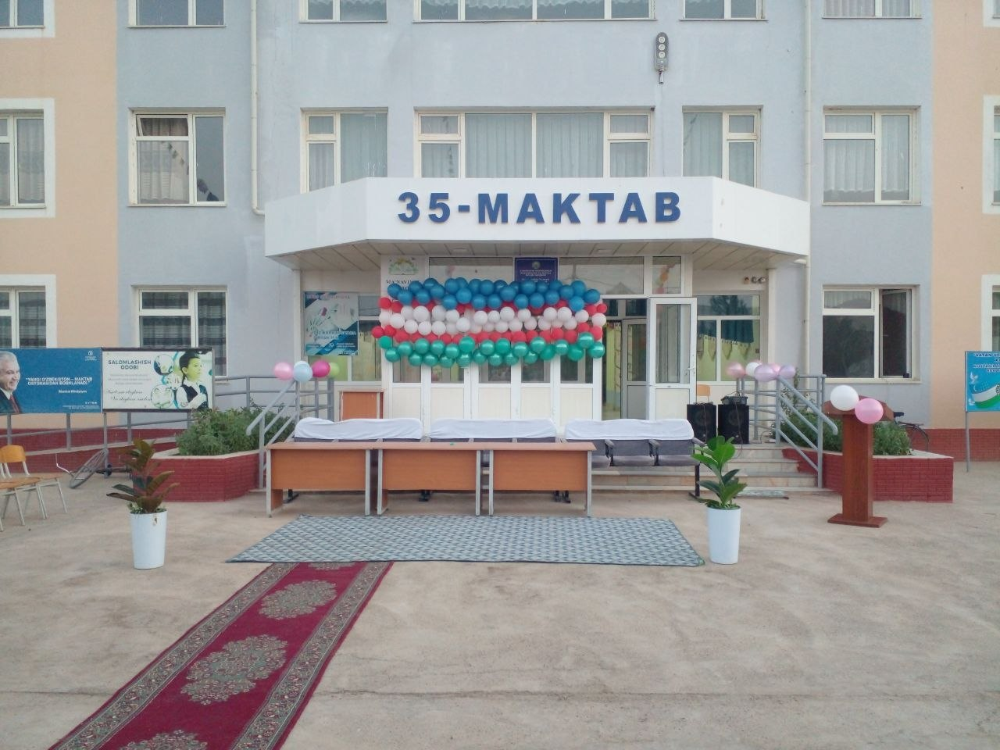
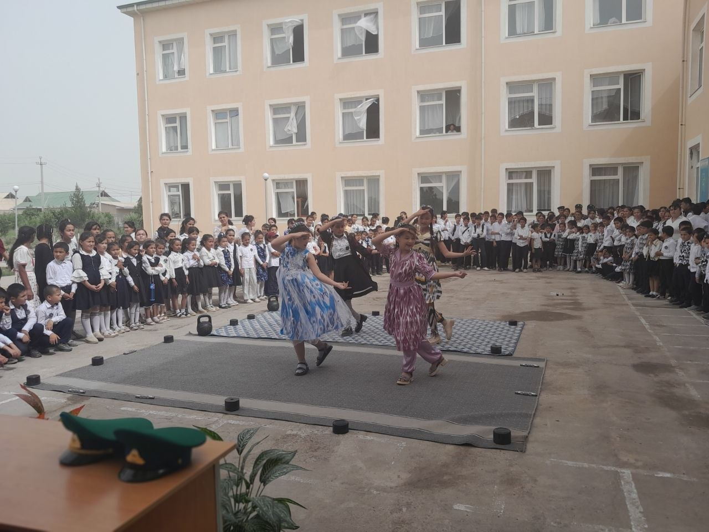
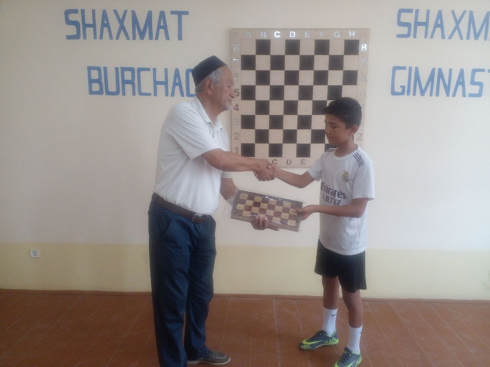
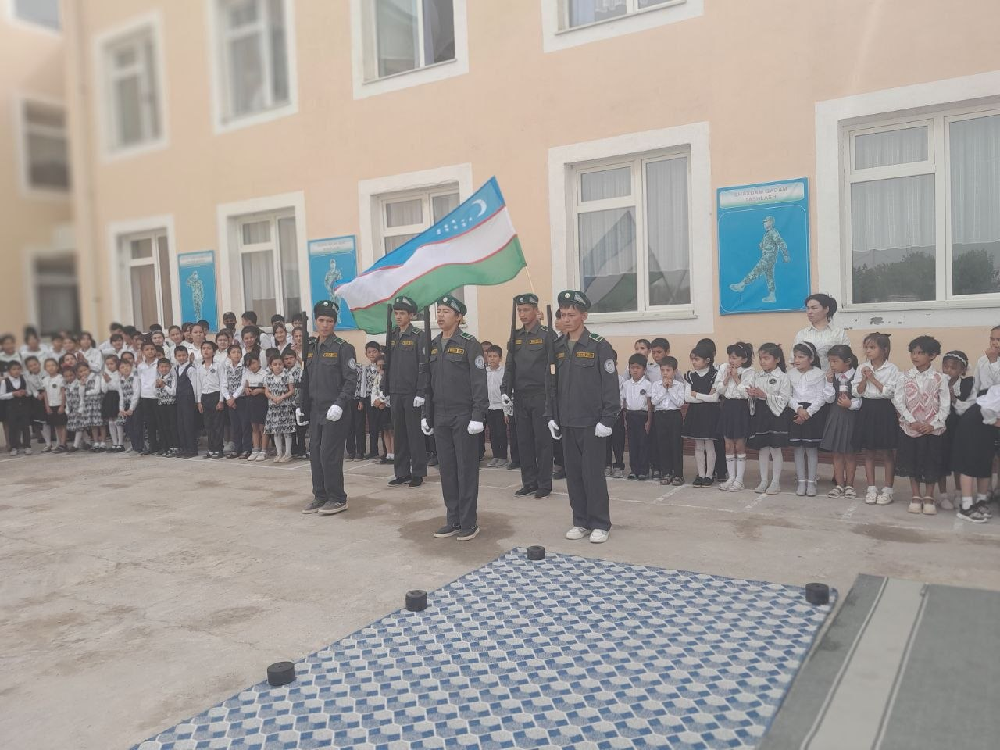
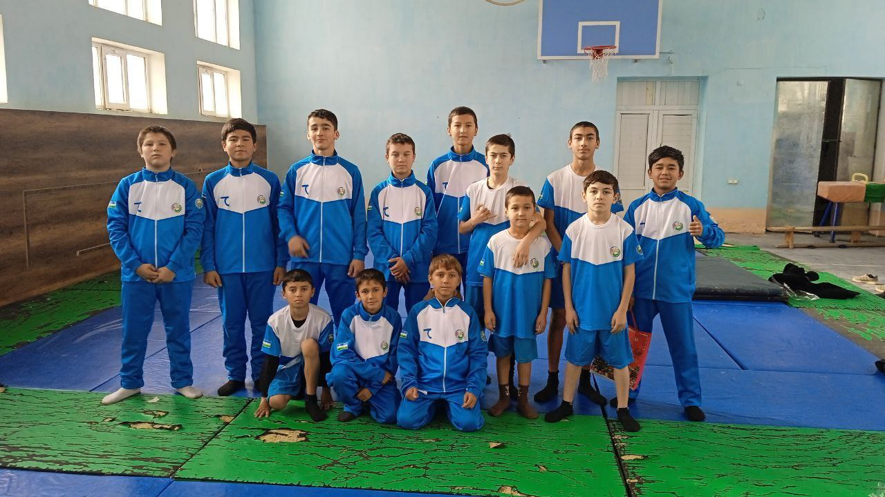
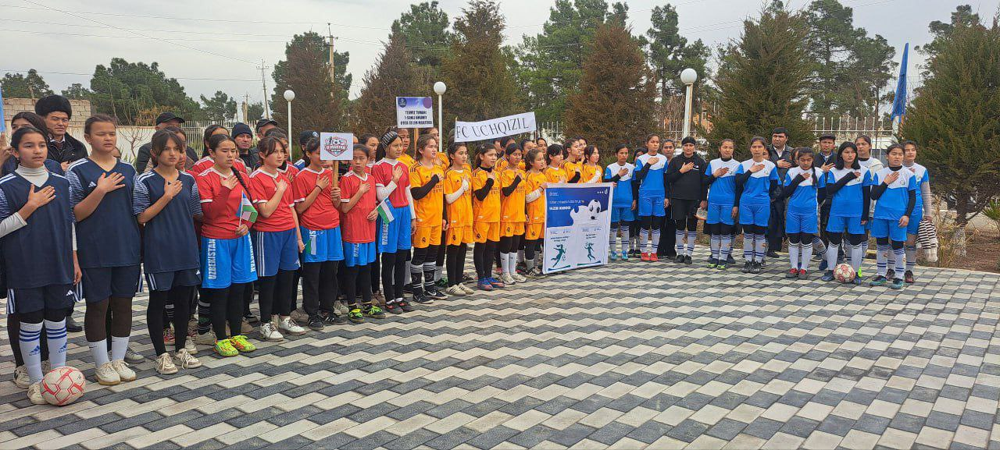
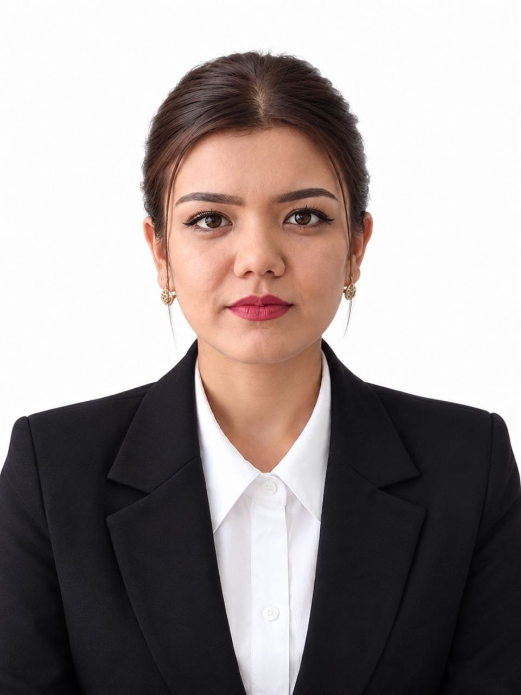
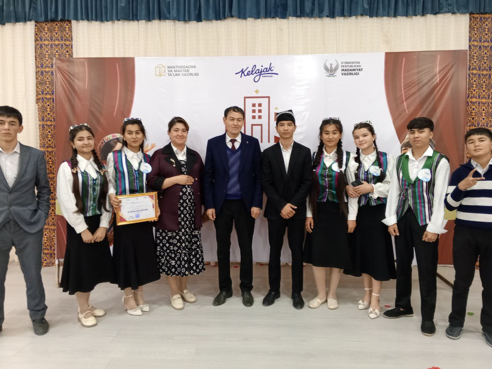

35-MAKTAB • TERMIZ TUMANI
Bilim, tarbiya va kelajak sari birgalikda.
O'quvchilarimizning bilim olishi, ijodiy qobiliyati, sportdagi faolligi va ma'naviy kamoloti uchun zamonaviy maktab muhiti.
1–11Sinf bosqichlari
27+Jadvaldagi sinflar
∞Orzular va imkoniyatlar






BIZNING MAKTAB
Maktab haqida
35-maktab — bilim, tarbiya, ijod va sportni birlashtiruvchi ta'lim maskani.
Ta'lim va taraqqiyot maskani
Bizning maqsadimiz — o'quvchilarning bilimga qiziqishini oshirish, mustaqil fikrlashini rivojlantirish, odob-axloq va vatanparvarlik tuyg'ularini mustahkamlash.
✓ Sifatli ta'lim
✓ Kuchli tarbiya
✓ Ijod va sport
✓ Ota-ona hamkorligi
📖
Bilim
Fanlarni puxta o'zlashtirish va zamonaviy ko'nikmalarni rivojlantirish.
🤝
Hamkorlik
Ustoz, o'quvchi va ota-onalar o'rtasida mustahkam hamkorlik.
🎨
Ijodkorlik
Teatr, musiqa, san'at va turli tanlovlarda o'z iste'dodini namoyon etish.
⚽
Sport
Sog'lom turmush tarzi va jamoaviy sport faoliyatini qo'llab-quvvatlash.
BOSHQARUV JAMOASI
Maktab rahbariyati
Ta'lim, tarbiya va o'quvchilar rivojini boshqarib boruvchi mas'ul xodimlar jamoasi.
Gafulov Erkin
Maktab direktori • Strategik rivojlanish va boshqaruv rahbari
💼 Ish faoliyati
Maktabning umumiy boshqaruvi, ta'lim sifati, jamoa faoliyati va rivojlanish jarayonlarini muvofiqlashtirish.

Murtazov Nuriddin
Ma'naviy-ma'rifiy ishlar rahbari • Tarbiyaviy yo'nalish koordinatori
💼 Ish faoliyati
O'quvchilarning ma'naviy tarbiyasi, ijtimoiy faolligi, tadbirlar va tarbiyaviy ishlarni tashkil etish.

Xudoyshukurov Dilshod
O'quv ishlari bo'yicha direktor o'rinbosari • Ta'lim jarayonlari koordinatori
💼 Ish faoliyati
Dars jarayonini tashkil etish, o'qituvchilar faoliyatini muvofiqlashtirish va o'quv jarayonini nazorat qilish.

Jo`raboyeva Zarina
Maktab psixologi • O'quvchilarni qo'llab-quvvatlash mutaxassisi
💼 Ish faoliyati
O'quvchilarning psixologik holatini qo'llab-quvvatlash, maslahatlar va sog'lom ijtimoiy muhitni mustahkamlash.
TARTIB VA MAS'ULIYAT
Maktab qoidalari
Maktabdagi o'quv jarayonini tartibli va xavfsiz tashkil etishga yordam beradigan asosiy qoidalar.
01
Vaqtida kelish
Darslarga o'z vaqtida kelish va mashg'ulotlarga tayyor holda qatnashish.
02
Hurmat
Ustozlar, sinfdoshlar va maktab xodimlariga hurmat bilan munosabatda bo'lish.
03
Tozalik
Sinf xonalari, hovli va umumiy hududlarni ozoda saqlash.
04
Telefon madaniyati
Dars paytida telefon va boshqa qurilmalardan faqat ruxsat etilgan holatda foydalanish.
05
Forma va tartib
Maktabning belgilangan kiyinish va ichki tartib talablariga rioya qilish.
06
Xavfsizlik
Maktab hududida xavfsizlik qoidalariga amal qilish va boshqalarning xavfsizligini hurmat qilish.
“Tartib bor joyda — ta'lim bor, ta'lim bor joyda — kelajak bor.”
FAXRIMIZ
Maktab yutuqlari
O'quvchilarimizning ijodiy, madaniy va jamoaviy faoliyatidan lavhalar.

🏆 2-O'RIN
TURON TEATRI TANLOVI
Tumanda 2-o'rin
O'quvchilarimizning sahna madaniyati, ijodkorligi va jamoaviy mehnati munosib natija bilan e'tirof etildi.
💃 IJOD VA SAN'AT
Milliy raqs va saxna ko'rinishi
Nafosat, iqtidor va milliy san'atimiz jozibasi.
⚽ FAOL HAYOT
Futbol musobaqasi va jo'shqinlik
Maydondagi do'stona raqobat va yuqori jamoaviy ruh.
🎭 TURON TEATRI
Tumanda faxrli 2-o'rin
Ijodiy jamoamizning yuksak sahnadagi faxrli muvaffaqiyati.

🎼 VILOYAT BOSQICHI
Viloyat sahnasidagi chiqishlar
O'quvchilarimizning viloyat miqyosidagi yuksak maxorati va ijodiy zafarlari.
🏅 SPORT VA SALOMATLIK
Chempionlarimiz va faol sportchilar
Intizom, iroda va mustahkam salomatlik timsollari.
💪 SPORT TADBIRI
Chaqqonlik va kuch sinashish
O'quvchilarning sport musobaqalaridagi qizg'in va murakkab bellashuvi.
Ijod — kelajak kaliti
San'at va madaniyatga qiziqish o'quvchining o'ziga ishonchini rivojlantiradi.
Natija — mehnat mevasi
Har bir tanlov ortida izlanish, mashg'ulot va jamoaviy harakat turadi.
Iste'dodga imkon
Har bir o'quvchining qobiliyatini namoyon etishi uchun maktabda imkoniyatlar yaratiladi.
O'QUV JARAYONI • 5 KUNLIK
Dars jadvali
Har bir hafta kuni alohida ko'rsatiladi. Sinfni tanlang, so'ng Dushanba, Seshanba, Chorshanba, Payshanba yoki Juma kunini bosing.
📚
Sinfni tanlang
Yuqoridagi sinf tugmalaridan birini bosing — shu sinfning 5 kunlik dars jadvali chiqadi.